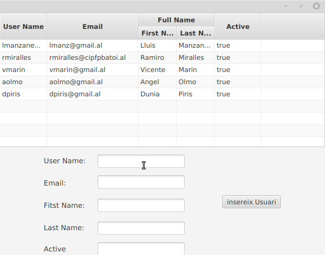

La classe TableView s’uitilitza juntament amb TableColumn i TableCell per a mostrar les dades en forma de taula.
Primer s’ha de crear la tabla i dir-li que siga editable.
TableView table = new TableView();
table.setEditable(true);
Una vegada creada, ja podem incloure-li les columnes que necessitem.
TableColumn nomCol = new TableColumn("Nom");
TableColumn cognomCol = new TableColumn("Cognom");
TableColumn direccioCol = new TableColumn("Direcció");
table.getColumns().addAll(nomCol, cognomCol, direccioCol);
Si en algun moment es vol amagar alguna columna, podem fer-ho:
aColumn.setVisible(false)
Com sempre, aquesta tasca es pot realitzar des del Scene Builder.
També es poden crear columnes anidades.
Suposem que en la columna direcció li volem afegir: carrer, població i provincia.
TableColumn carrerCol = new TableColumn("Carrer");
TableColumn poblacioCol = new TableColumn("Població");
TableColumn provinciaCol = new TableColumn("Provincia");
i ara ja es poden anidar dintre de la columna superior:
direccioCol.getColumns().addAll(carrerCol, poblacioCol,provinciaCol)
El següent codi li mostra com agregar dades a una vista de taula. Cada fila de la taula representa a una persona amb nom i cognom.
En la lògica de la interfície d’usuari, utilitza una ObservableList per a mantindre el valor d’una vista de taula. Cada element en la ObservableList és un objecte Person.
En el controlador d’esdeveniments de botó, crea una nova Persona amb nom i cognom codificats, després s’agrega a la ObservableList.
private ObservableList<Person> data_table = FXCollections.observableArrayList(
new Person("lmanzaneque", "lmanz@gmail.al", "Lluis", "Manzaneque", "true"),
new Person ......
);
